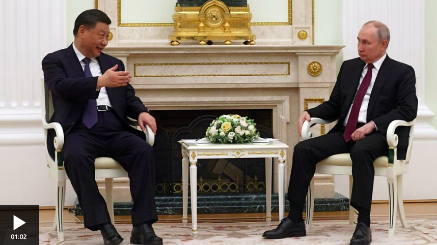

NEWS |
||||
| Home | News | Sport | Reel | Worklife |
|  |
| Russia's Vladimir Putin has welcomed China's Xi Jinping to Moscow, as part of a two day visit. Appearing in front of cameras, the leaders called each other "dear friend". However, the relationship between the two countries has not always been so positive. BBC Russia editor Steve Rosenberg and China correspondent Stephen McDonell examine the complex history between the two presidents and question what the future holds for the nations. Video by James McFadden and Suneil Asar. |